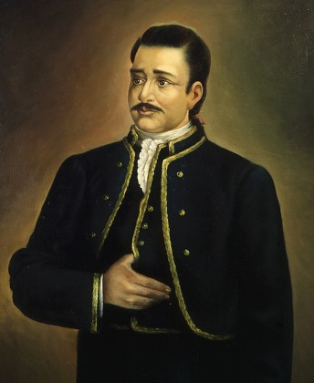
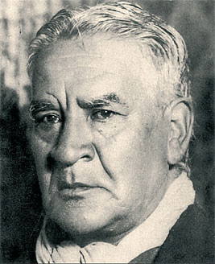
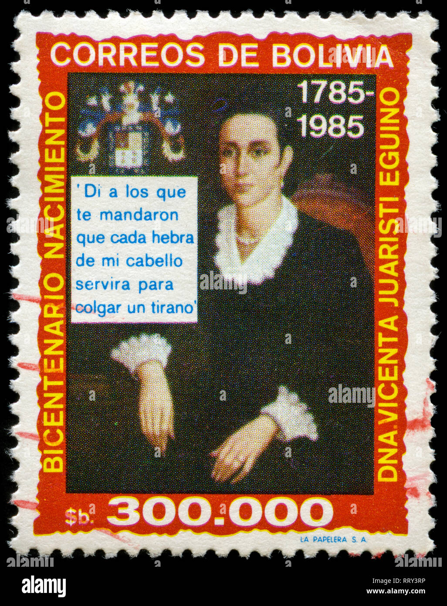
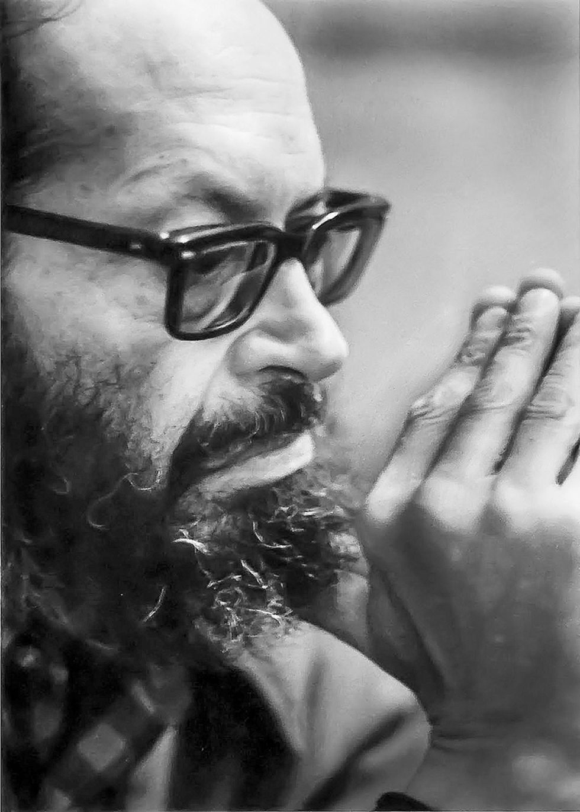
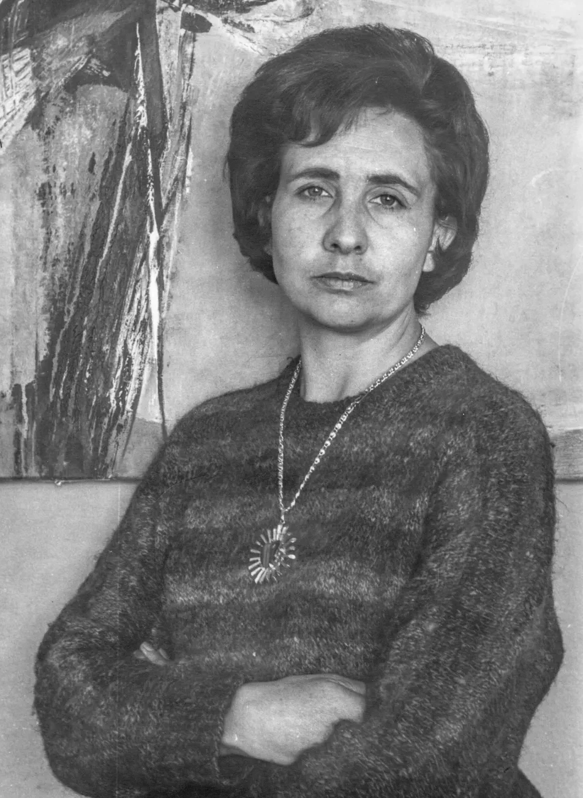

PERSONAJES HISTÓRICOS DE LA PAZ
En la La Paz hubo bastantes personajes historicos, entre los mas importantes estan:
- Pedro Domingo Murillo:
Considerado el precursor de la independencia de Bolivia, Pedro Domingo Murillo fue un valiente líder revolucionario que encabezó el levantamiento contra el dominio español en La Paz en 1809. Su famoso grito de "¡Viva el Alto Perú! ¡Muera el mal gobierno!" se convirtió en un símbolo de resistencia y lucha por la libertad. Murillo es recordado como un héroe nacional y su legado perdura como un ejemplo de valentía y compromiso con la causa independentista.

- Franz Tamayo
Aunque pertenece a una época posterior (siglo XX), es uno de los intelectuales, poetas y ensayistas más grandes que ha dado La Paz. Su obra literaria y política, especialmente su libro Creación de la Pedagogía Nacional, revolucionó el pensamiento boliviano al proponer que la verdadera energía y fuerza de la nación radicaban en el habitante indígena

- Vicenta Juaristi Eguino
Conocida como "La Heroína de la Revolución de La Paz", Vicenta Juaristi Eguino fue una valiente mujer que participó activamente en la lucha por la independencia. Se destacó por su coraje y determinación, llegando a liderar grupos de insurgentes y a financiar la causa libertaria con sus propios recursos. Su legado es un símbolo de la valentía femenina en la historia de Bolivia.

- Jaime Saenz
Considerado el poeta más importante de La Paz en el siglo XX, Jaime Saenz es una figura emblemática de la literatura boliviana. Su obra, marcada por un estilo oscuro y surrealista, refleja la complejidad de la ciudad y su gente. A través de sus poemas y relatos, Saenz capturó la esencia de La Paz, convirtiéndose en un referente cultural fundamental para entender la identidad paceña.

- Teresa Gisbert
Fue una destacada historiadora, arquitecta y museóloga paceña. Su trabajo de investigación sobre la historia y el arte de La Paz ha sido fundamental para preservar el patrimonio cultural de la ciudad. Gisbert dedicó su vida a estudiar y difundir el legado histórico de La Paz, convirtiéndose en una autoridad en la materia y dejando un impacto duradero en la comprensión de la identidad paceña.
